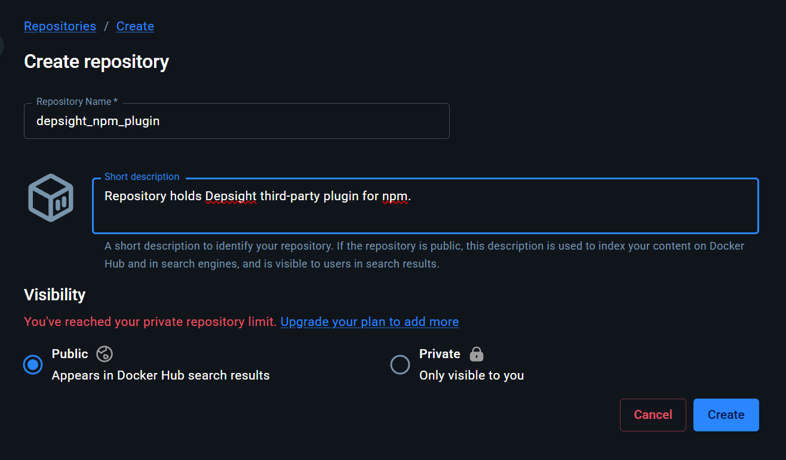
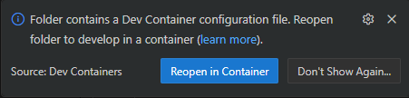
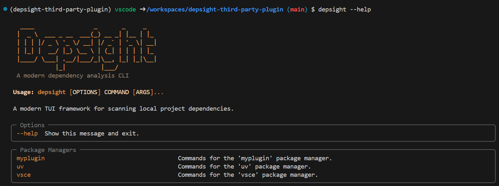

Getting Started
System Requirements
Before you begin, make sure the following tools are installed on your machine:
- IDE with DevContainer support — either of the following:
- Visual Studio Code with the Dev Containers extension
RECOMMENDED - JetBrains Gateway (supports Dev Containers via the Remote Development plugin)
- Visual Studio Code with the Dev Containers extension
- Container manager — any one of the following:
- Docker Desktop (macOS, Windows, Linux)
RECOMMENDED - Docker Engine (Linux)
- Podman with the Podman Desktop or CLI
- Docker Desktop (macOS, Windows, Linux)
Set Up Repositories
Set up Your GitHub Depsight NPM Plugin Repository
- Open the deply-third-party-plugin template repository on GitHub
- Click Use this template → Create a new repository
- Set
deply-third-party-npm-plugin-solutionas the repository name and click Create repository -
Clone your new repository locally:
git clone https://github.com/<your-username>/deply-third-party-npm-plugin-solution.git
Set up Your Docker Depsight NPM Plugin Repository
- Navigate to Docker Hub and sign in
- Select MyHub in the top-level navigation menu
- Locate and click Create repository
-
Give it a name (e.g.,
depsight_npm_plugin) and set the visibility to Public, then click Create
Configure Your Docker Credentials
Create a Personal Access Token (PAT)
- Navigate to the Docker Hub login page and sign in with your credentials, or click Sign Up to create a new account
- Locate your user avatar in the top-right corner and navigate to Account Settings
- In the left-side navigation menu, click Personal access tokens and then Generate new token
-
Specify a description, an expiration date, and grant it Read, Write, Delete permissions
Save your token now
Copy the generated token and store it in a safe place immediately. Docker Hub will never show it again once you leave or reload the page.
-
Open a terminal and run:
docker login -u <your-docker-username>Enter your PAT as the password when prompted
Configure Your GitHub Secrets and Variables
- Navigate to your forked repository on GitHub and click Settings in the repository navigation bar
- In the left sidebar, expand Secrets and variables and click Actions
-
Use the New repository secret button to add the following secret:
Secret Name Description DOCKER_PATYour Docker Hub Personal Access Token (created in the previous step) -
Switch to the Variables tab and use New repository variable to add the following variables:
Variable Name Description DOCKER_USERNAMEYour Docker Hub username DOCKER_REPOSITORYYour Docker Hub repository path (e.g., yourusername/depsight-npm-plugin)
Start the DevContainer
-
Open a terminal, navigate to the cloned plugin repository, and open it in VS Code:
cd deply-third-party-npm-plugin-solution && code . -
VS Code will detect the
.devcontainerconfiguration and show a prompt in the bottom-right corner. Click Reopen in Container to build and start the DevContainer.
-
With the DevContainer environment set up,
depsightis available directly from the command line:
Troubleshooting
Cannot run code . inside WSL
If you are using WSL and the code . command fails, check whether Windows interoperability is disabled in your /etc/wsl.conf:
[interop]
enabled=false
Set enabled=true (or remove the entry) and restart your WSL session, then try again.